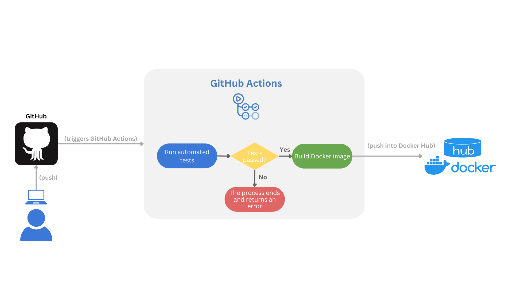

from catboost import CatBoostRegressor
# --snip--
# Instantiate our model
catboost_model = CatBoostRegressor(
iterations=1000, # Boosting iterations
learning_rate=0.1,
depth=6, # Tree depth
loss_function='RMSE', # Loss
verbose=100 # Let it print the learning state every 100 iterations
)
# Train
catboost_model.fit(X_train, y_train, cat_features=categorical_features)
# --snip--
# Save trained model
catboost_model.save_model("../predictive_models/catboost_model_19Dec2024.cbm")Bike Rentals Prediction API
GitHub Repo: Bike Rentals Prediction API

An accesible inference system
In a fast-paced world, one of the problems we face as data professionals is delivering our data products promptly. Also, distributing them in a manner that doesn’t affect our productivity, for example, manually running a Jupyter Notebook or an R script every time someone needs insights, is awfully unproductive.
An idea that is not new, is to deliver the “answers” in an automated, from which the clients can self-serve each time they are in need. After we have a data product, for instance, a predictive model (machine learning if you are into buzzwords), we can make available its capabilities to our stakeholders via a micro service.
With that in mind, we will use this small tutorial to understand better the building of a production-ready machine learning microservice to predict bike rentals. By the end, you’ll have a solid understanding of using FastAPI for API development, Docker for containerization, and GitHub Actions for CI/CD. Whether you’re a data scientist looking to scale your models or a developer exploring microservices, this guide is for you.
An ML model as a microservice
Imagine your (predictive) model being accessed anytime without disturbing your peace or consuming your time; after all, your time is expensive, and you have many tasks. Here is where the idea of microservices comes into action. A microservice is an isolated piece of software that is in charge of a single task (service) and communicates through a well-defined API. You finish your model, pack it in a microservice, and make it available through an API.
This way, the model will always be available, and its consumption won’t block other tasks. Also, more products could be potentially developed with the API.
But what is an API?
An API is an intermediary that enables you to interact with a service without requiring knowledge of how this service works. You just need to know precisely what you want, tell it to the API, and the API will serve you what you requested.
Let’s say that after work, you get hungry, so you park your Capital Bikeshare™ bike out of your favorite Mexican restaurant1. You enter the restaurant and sit at a table. Instead of going directly to the kitchen to cook your own meal or asking the chef what you want, you need to place your order through the waiter or waitress. You kindly request your enchiladas, and after a while, they bring your meal to you.

Notice that you, as the client, are not required to know how to cook enchiladas. Also, you do not interact directly with the people who prepare the food. You get what you want through a waiter (the API).
In summary, an API is the piece of the system you interact with to get a result generated by a service. Producing this result might be complex, but you don’t care about that since you only have to deal with the API.
Software engineering for data scientists
Another problem common to data scientists is that research, predictive modeling, and analytics are dirty processes. This is partly due to a lack of training in software engineering, which involves design, testing, and software maintenance.
We usually have many problems to solve, questions to answer, and limited time at work. This leaves little to no time to apply the best practices to develop our analysis and maintain our code, leaving a trail of technical debt with each delivery. Yet, since most of us write code, we are, in fact, software developers because we develop software. This should be a hard-to-miss hint that software engineering practices must be core in our profession, or at least not ignored.
Here, we will implement some practices core of software engineering like:
- CI/CD: Continuous Integration (CI) and Continuous Deployment (CD) with GitHub Actions.
- Automated tests: unit, integration, and inference tests with
pytest. - Containerization: package the application with Docker for consistency across environments (i.e., it should work on every machine with a well-setup Docker). Dependency Management: For reproducibility, dependencies were specified in a
requirements.txtfile, and development was conducted in an isolated environment (venv). - Microservices architecture: The project is a self-contained microservice focused on a single responsibility: predicting bike rentals. It is independently deployable and communicates through HTTP.
We intend to review these concepts in a practical, applied way. This will give us more tools to design and produce more sustainable systems, which we can develop more efficiently through good practices without sacrificing smooth delivery to our clients.
About the technologies
Through this practical project, we will deal with several technologies, the most important:
- FastAPI: a framework to develop APIs with Python. It is easy to learn, and it makes the development of APIs incredibly fast.
- Uvicorn: an ASGI (Asynchronous Server Getaway Interface) Server. It handles incoming HTTP requests and sends responses. This lightweight server is appropriate for our microservice.
- Docker: a platform to pack our application into isolated “containers” and make them available to be run in several systems. Perfect to build microservices.
- GitHub Actions: a CI/CD platform that allows us to automate your development pipelines. We will use them here to automate the software tests and build and push our docker images.
- pytest: a Python framework to simplify our software testing.
These tools will make the development and publishing of our microservice a breeze.
Let’s get started
We will start with the mandatory xkcd comic that this kind of articles include so we can continue with the tutorial.

I know that this has nothing to do with software engineering or APIs, but little Bobby Tables always cracks me laugh. Now we can continue with the build of our API and some software engineering practices.
Problem we want to solve
Now, let’s focus on the problem we want to solve; this is probably the most crucial step since it is how we add value to the business. We are hired to solve analytical problems with evidence (data) as our raw material to produce those solutions.
You probably won’t be surprised to learn this project started as a Jupyter Notebook, which I encourage you to check out here. We are using an open data set from the UCI Machine Learning Repository.
Let’s assume we are working for Capital Bikeshare, a company dedicated to providing a self-service bike rental service managed through a mobile app. For the company, it is crucial to predict the peaks of service usage so they can restock or make more available their products when they’re more needed. These products can be cloud computing resources during peak hours, bicycle units, human staff, etc. Also it can b convenient to predict the dates and hours of least use for maintenance tasks, like server updates or bike maintenance.

Working as a data scientist for a big tech transport company, you will have lots of data and computational resources. On this occasion, you were put in charge of finding a way to predict the days and hours they will have to replenish their stock and increase the server’s capacity, investing in more resources only when necessary (saving money). Also, knowing when to schedule the maintenance labor will be valuable as well.
After finishing the data exploration, you know that working days and the entry and exit from work hours are the busiest time frames. Also, climatic conditions can affect the willingness to rent a bike. You are cautious, so you first took the time to understand the phenomenon. Then, you built the model prototype and corroborated that it is possible to forecast the number of rented bikes at an hour-of-the-day granularity level.
Success! You have a model that can help determine the best time to provide more resources or the times for maintenance. Does this mean that you have already finished with the task and can go on to live the good life?2 Well, you already know that Jupyter is not a tool that produces clean results and that if you leave it there, your model will have to be run manually each time, which can introduce bugs and errors. This also means that you will have a high and constant influx of people knocking at your door3 asking for predictions and insights.
Jupyter is ideal for experimenting and testing but not for delivering results. Hence, you have decided to deploy this first iteration of the model (the prototype) as a microservice that can be consumed via an API. Here, you can assess how the model behaves in the wild and prepare for future iterations. You will start adding value with predictions and valuable information that will help improve your model.
The engineering team, for example, will quickly adopt the app to know when to conduct maintenance jobs.
Microservice development
We were assigned a task, so we started by investigating bike rental data and then continued by building a predictive model using the CatBoost algorithm. This model will be the inference engine of our microservice. You can see this part of the project here in the notebook4. We saved the model in our project’s predictive_models/ folder.
Note
During this tutorial, we will show you some code snippets and indicate the file where the code is located5. You should then be able to follow the project’s code, which is available on the GitHub repo.
After some research and experimentation, we developed a CatBoost model capable of predicting the number of rented bikes at a specific time, given some environmental and temporal conditions. The code that generated the model is next.
Filename: notebooks/eda_and_toy_model.ipynb
In this analysis, we generated some insights6 and the core of our microservice, a predictive model stored in predictive_models/catboost_model_19Dec2024.cbm. Now that we have our predictor, let’s see how we can make the predictions accessible to others in the company.
API development
The API will move data around (receive and deliver) as its primary job, so it is key to establish a clear set of rules for the data our clients send. Moving back to our restaurant example, you probably could put your enchiladas order in English or Spanish, but it might be hard for the waiter if you place the order in Japanese7. Hence, to get your enchiladas, you must request them in a way that the staff can understand, and Pydantic is here to enforce the rules that make such understanding happen.

Defining the Pydantic model
We will start this section by defining our Pydantic model. Pydantic is a library for data validation that uses Python-type annotations. Let’s establish a Pydantic model for our API requests and learn more about the library in the process.
Filename: app/models/bike_sharing.py
from pydantic import BaseModel, Field, field_validator
1class BikeSharingRequest(BaseModel):
2 season: str = Field(..., description="Season (Winter/Spring/Summer/Fall)")
mnth: str = Field(..., description="Month name (January, etc.)")
3 hr: int = Field(..., ge=0, le=23, description="Hour of the day")
holiday: str = Field(..., description="Yes/No if holiday")
weekday: str = Field(..., description="Name of the weekday (Monday/Tuesday/Wednesday/Thursday/Friday/Saturday/Sunday)")
4 workingday: str = Field(..., description="Yes/No if working day")
weathersit: int = Field(..., description="Weather code")
temp: float = Field(..., ge=0, le=1, description="Normalized temperature")
atemp: float = Field(..., ge=0, le=1, description="Normalized feeling temperature")
hum: float = Field(..., ge=0, le=1, description="Normalized humidity")
windspeed: float = Field(..., ge=0, le=1, description="Normalized wind speed")
5 @field_validator("season")
6 def validate_season(cls, v):
allowed = {"Winter", "Spring", "Summer", "Fall"}
7 if v not in allowed:
8 raise ValueError(f"season must be one of {allowed}")
return v
# -- snip -- (validators continue)- 1
-
The first thing to notice is that the Pydantic model is defined as a Python class that inherits from
BaseModel; this is the Pydantic base class used to create models with built-in data validation. - 2
-
Each class attribute is defined with a data type;
season, for example, is defined asstr. We also use the functionField()to specify constraints and metadata; the ellipsis literal...here means two things: first, a value must be provided, second, there is no default value for this attribute. Then, some metadata is specified in thedescriptionparameter. - 3
-
For
hrattribute, we have constraints used for numeric validation. So,ge=0means that the hour has to be greater or equal to 0, whilele=23indicates that the hour should be less or equal to 23. So if the user send a request withhr=-1the system will complain and throw a warning. - 4
-
With what we know so far, we could read this line as “
workingdayis a requiredstrfield with a description.” - 5
-
We have the
field_validatordecorator8 to build custom validation logic for a specific field. Besides the already fantastic default capabilities of Pydantic, we can define our custom validations. In this case, we want to be sure that the client will provide only valid values for theseasonfield. CatBoost uses categories as predictors, and it is case sensitive (i.e.,"Summer" != "summer). With this extra step, FastAPI will send a custom message to the client, informing that the API expects"Summer"not"summer". - 6
-
We define the function
validate_season, which takes two parameters:cls, a keyword indicating a reference to the class (BikeSharingRequest), andv, representing the value of the field we’re validating. - 7
-
Check if the value we validate is within the
allowedset. - 8
- Raise an error if the value is not allowed; it also tells the client which values are expected.
To summarize the structure of our Pydantic model:
Filename: app/models/bike_sharing.py
1from pydantic import BaseModel, Field, field_validator
2class BikeSharingRequest(BaseModel):
3 season: str = Field(..., description="Season (Winter/Spring/Summer/Fall)")
mnth: str = Field(..., description="Month name (January, etc.)")
hr: int = Field(..., ge=0, le=23, description="Hour of the day")
holiday: str = Field(..., description="Yes/No if holiday")
weekday: str = Field(..., description="Name of the weekday (Monday/Tuesday/Wednesday/Thursday/Friday/Saturday/Sunday)")
workingday: str = Field(..., description="Yes/No if working day")
weathersit: int = Field(..., description="Weather code")
temp: float = Field(..., ge=0, le=1, description="Normalized temperature")
atemp: float = Field(..., ge=0, le=1, description="Normalized feeling temperature")
hum: float = Field(..., ge=0, le=1, description="Normalized humidity")
windspeed: float = Field(..., ge=0, le=1, description="Normalized wind speed")
4 @field_validator("season")
def validate_season(cls, v):
allowed = {"Winter", "Spring", "Summer", "Fall"}
if v not in allowed:
raise ValueError(f"season must be one of {allowed}")
return v
# -- snip -- (validators continue)- 1
- Required Pydantic imports.
- 2
- The model is defined as a Python class.
- 3
- Within the class, we define the model’s fields as attributes of the class
- 4
- We can include custom validators within the model.
Great! Now, we have a Pydantic model and a better understanding of it. Next, we will work on our API.
FastAPI development
With the data model in place (BikeSharingRequest), it’s time to develop the core of our FastAPI microservice. FastAPI makes it easy to build performant APIs with built-in data validation and clear, concise code. In this section, we’ll walk through setting up the app, creating endpoints, and serving a machine learning model for predictions.
To get started with our FastAPI app, we create the Python file app/main.py. Let’s take a look at the imports we’re gonna need.
Filename: app/main.py
from fastapi import FastAPI
from typing import List
from app.services.ml_model import load_model
from app.services.requests_to_polars import req_to_polars
1from app.models.bike_sharing import BikeSharingRequest
from fastapi import HTTPException
# --snip--- 1
- In this line we import the Pydantic data model we created in the previous step.
Next, we will begin coding the core of our FastAPI app, starting with the instantiation of the main application object, app. This is done using the FastAPI() constructor. The annotated code is shown below.
Filename: app/main.py
# -- snip --
# Instantiate a FastAPI class, the core of the application
1app = FastAPI()
# Read predictive model
2ml_model = load_model('predictive_models/catboost_model_19Dec2024.cbm')
# Defines a GET endpoin at the root path "/"
3@app.get("/")
async def index() -> dict:
return {"message": "Bike rentals ML predictor (regressor)"} # Returns a simple JSON response with a message
# --snip--- 1
-
Instantiates the main FastAPI application. Every endpoint and configuration will attach to this
appobject. - 2
- Read the predictive model, which is a trained CatBoost model.
- 3
- A GET endpoint to the root URL. When someone accesses this endpoint, they will be served with the “message.”
So far, we have instantiated the FastAPI application and defined the root endpoint. Next, we’ll implement the core functionality of our app by defining the /predict endpoint. This endpoint serves as the heart of the API, handling four key responsibilities:
- Validation: Ensures the incoming requests meet the expected format and constraints.
- Data Processing: Transforms input data into a format compatible with the trained CatBoost model.
- Prediction: Uses the model to generate predictions based on the input.
- Response Generation: Packages the predictions into a JSON response to return to the client.
Defining the /predict Endpoint
In this step, we define the core functionality of our API: the /predict endpoint. This endpoint handles incoming POST requests, validates the input data, processes it, generates predictions using the trained CatBoost model, and returns the predictions as a JSON response.
Let’s see the code.
Filename: app/main.py
# -- snip --
# Defines a POST endpoint for predictions
1@app.post('/predict',
summary = "Predict bike rentals",
description = "Takes input data and returns amount rental predictions (regression).")
2async def predict_rentals(requests: List[BikeSharingRequest]) -> dict:
"""
Predict bike rentals based on input features.
Args:
requests (List[BikeSharingRequests]): A list of input data objects.
Returns:
dict: A dictionary containing the predictions as a list.
"""
# Handles the case when an empty list is posted
3 if not requests:
raise HTTPException(
status_code = 422,
detail = "The request is empty"
)
# Convert each pydantic model to a dict and load into a Polars DataFrame
4 df = req_to_polars(requests)
# Instances to predict
5 features = df.to_numpy()
# Make predictions
6 predictions = ml_model.predict(features)
return {
7 'predictions': predictions.tolist()
}- 1
-
POSTEndpoint Definition: Defines aPOSTendpoint at/predictwith metadata for better documentation (summaryanddescription). - 2
-
Input Validation: Expects a list of
BikeSharingRequestobjects, ensuring automatic data validation by FastAPI. - 3
-
Empty Request Handling: If the request body is empty (
[]), returns a422 Unprocessable Entityerror with a descriptive message. - 4
- Data Transformation: Converts the list of validated Pydantic objects into a Polars DataFrame for efficient processing.
- 5
- Compatibility with CatBoost: Since CatBoost does not accept Polars DataFrames, the data is converted to a NumPy array.
- 6
- Predictions: Uses the trained CatBoost model to compute predictions based on the input data.
- 7
- Response Creation: Returns the predictions as a JSON-compatible dictionary.
Endpoint Responsibilities
The predict_rentals function handles multiple responsibilities:
- Edge Case Handling: Validates and handles empty input.
- Data Transformation: Converts structured input data into a format compatible with the machine learning model (numpy).
- Inference: Generates predictions using the trained CatBoost model.
- Response Generation: Packages the results into a JSON response.
Testing the Application
With the ‘/predict’ endpoint defined, we now have the core functionality of our prediction API. Let’s test it!
Clone the Repository
If you haven’t already, clone the GitHub repository to follow along.
Run the Application
From the root of the project, start the FastAPI app using Uvicorn:
uvicorn app.main:app --host 127.0.0.1 --port 8000Once the application is running, you should see output similar to this in your terminal:
user@user-pc:~/ml_model_api$ uvicorn app.main:app
INFO: Started server process [19168]
INFO: Waiting for application startup.
INFO: Application startup complete.
INFO: Uvicorn running on http://127.0.0.1:8000 (Press CTRL+C to quit)Explore the API
With the app running, you can now access the API:
- API Root: http://127.0.0.1:8000/
When you visit the root endpoint, you’ll see the following message:
{
"message": "Bike rentals ML predictor (regressor)"
}Pydantic model
One of the standout features of FastAPI is its ability to automatically generate API documentation, complete with interactive functionality. You can access the API documentation for this project by visiting:
- Swagger UI (API Documentation): http://127.0.0.1:8000/docs
In this interface, you can:
- Explore the API’s endpoints and their specifications.
- Test the endpoints directly using the provided interface.
- Examine the Pydantic model used for data validation.
Exploring the Pydantic Model
FastAPI uses Pydantic under the hood to validate and parse incoming JSON data. If you navigate to the Swagger UI, you’ll find the schema for the BikeSharingRequest model. This schema provides key information:
- Field Descriptions: Attributes in the BikeSharingRequest class are documented, including the description parameter provided via Field().
- Data Type Constraints: Default type constraints (e.g., string, integer) are visible for each field.
- Range Restrictions: For numeric fields, restrictions such as [0, 23] for the hr field are displayed clearly in square brackets.
Custom Validators
While custom validators are not automatically displayed in the Swagger UI, their logic is included (manually) as metadata in the description of the corresponding fields. For instance, you can view notes about specific constraints or requirements that are enforced programmatically.
FastAPI ensures each JSON object in the incoming list is validated and parsed into a BikeSharingRequest instance using Pydantic. This guarantees data consistency and simplifies further processing.
BikeSharingRequest is expanded in the Schemas sectionFastAPI app
The FastAPI process begins when a user sends a POST request containing input data in JSON format. FastAPI inspects the request body and knows to parse it as a List[BikeSharingRequest] object. FastAPI knows how to parse the JSON due to the endpoint function signature:
Filename: app/main.py
@app.post('/predict',
summary = "Predict bike rentals",
description = "Takes input data and returns amount rental predictions (regression).")
1async def predict_rentals(requests: List[BikeSharingRequest]) -> dict:- 1
-
In the function signature, the
List[BikeSharingRequest]annotation informs FastAPI to interpret the raw JSON input as a list of JSON objects that match theBikeSharingRequestschema.
Process Breakdown
1. JSON Parsing and Validation
- FastAPI loops through the JSON objects in the request body.
- Each JSON object is validated against the
BikeSharingRequestPydantic model. - Validation includes:
- Ensuring all required fields are present.
- Verifying field types and constraints.
- Applying custom validators defined in the
BikeSharingRequestmodel.
2. Error Handling
- If any JSON object fails validation, FastAPI stops the process and returns a
422 Unprocessable Entityresponse, including details about the validation errors. - The
predict_rentalsfunction is not called if validation fails.
3. Object Creation
- If all JSON objects pass validation, FastAPI creates a list of
BikeSharingRequestinstances and passes them to thepredict_rentalsfunction as therequestsargument.
4. Data Shaping and Inference
- Inside the
predict_rentalsfunction:- The input data is shaped for inference by the CatBoost model.
- From
List(BikeSharingRequest)to numpy array. - Predictions are generated using the trained model.
5. Response
- The predictions are formatted as a JSON response and sent back to the user.
Visual Representation
The entire process is summarized in the flowchart below:
For simplicity, the Uvicorn server is abstracted away from the diagram. The focus is solely on the core FastAPI application flow, from receiving a request to sending a response.
With the core functionality of our FastAPI application in place, (i.e., the `/predict/predict endpoint for serving predictions), it’s time to focus on deployment and automation. While building a robust application is essential, ensuring that it can be reliably tested, built, and deployed is equally important. This is where Continuous Integration (CI) and Continuous Deployment (CD) come into play.
By implementing CI/CD pipelines, we can:
- Automate Testing: Ensure every change to the codebase is verified by running unit tests and integration tests automatically.
- Streamline Deployment: Build and push a Docker image of the application to a container registry (e.g., Docker Hub), ready for deployment in any environment.
- Maintain Code Quality: Catch bugs early and enforce consistent standards with every change.
In the next section, we’ll set up a CI/CD workflow using GitHub Actions to:
- Run automated tests with pytest.
- Build and publish a Docker image of our FastAPI app.
- Let’s dive into automating the lifecycle of our application!
CI/CD (Continuous Integration / Continuos Deployment)
Continuous Integration (CI) and Continuous Deployment (CD) are essential pillars of modern software development, enabling teams to automate testing, building, and deployment processes. They ensure that every change to the codebase is rigorously tested and deployed efficiently.
While I’d love to provide an in-depth introduction to CI/CD here, I highly recommend the excellent tutorial by Itskmyoo, titled Automating FastAPI Project Build with GitHub Actions and Push to DockerHub. It offers a clear, practical guide to setting up CI/CD pipelines for FastAPI projects using GitHub Actions.
Our Customization
Building on Itskmyoo’s tutorial, we’ll implement a similar CI/CD pipeline with minor adjustments tailored to our project. Below are the configurations you’ll need to get started.
Dockerfile (Containerization)
The Dockerfile is critical for containerizing our FastAPI app. Here’s the updated version for our project:
Filename: Dockerfile
# Use an official Python runtime as a parent image
FROM python:3.12-slim
# Set the working directory in the container
WORKDIR /api_app
# Copy the requirements file into the container
COPY requirements.txt /api_app/
# Install dependencies
RUN pip install --no-cache-dir -r requirements.txt
# Copy the project files into the container
COPY . /api_app/
# Expose port 80 for external access
EXPOSE 80
# Define environment variable
ENV NAME=ml-model-api-docker
# Set the maintainer label
LABEL maintainer="jospablo777 <jospablo777@gmail.com>"
# Run the FastAPI app with Uvicorn
CMD ["uvicorn", "app.main:app", "--host", "0.0.0.0", "--port", "80"]GitHub Actions Workflow
The GitHub Actions workflow (.github/workflows/main.yml) automates testing, building, and pushing the Docker image to Docker Hub. Below is the configuration for our project:
name: ML Model API - Test, build, and push
on:
push:
branches:
- main
jobs:
test:
runs-on: ubuntu-latest
steps:
- name: Checkout code
uses: actions/checkout@v2
- name: Set up Python
uses: actions/setup-python@v4
with:
python-version: "3.12"
- name: Install dependencies
run: |
python -m pip install --upgrade pip
pip install -r requirements.txt
- name: Run tests
run: pytest tests/ --cov=app
build:
needs: test # build job runs only if tests pass
runs-on: ubuntu-latest
steps:
- name: Checkout code
uses: actions/checkout@v2
- name: Set up Docker Buildx
uses: docker/setup-buildx-action@v1
- name: Login to Docker Hub
run: echo ${{ secrets.DOCKERHUB_ACCESS_TOKEN }} | docker login -u ${{ secrets.DOCKERHUB_USERNAME }} --password-stdin
- name: Build and push Docker image
run: |
docker buildx create --use
docker buildx build \
--file Dockerfile \
--tag jospablo777/ml-model-api:latest \
--push .
env:
DOCKER_CLI_EXPERIMENTAL: enabled
DOCKER_BUILDKIT: 1The main modification was adding a testing section before the docker build.
How It Works
- Testing:
- Runs on every push to the
mainbranch. - Installs dependencies and runs
pytestto verify the codebase, ensuring that only tested and reliable code proceeds to the build stage.
- Runs on every push to the
- Building:
- After passing the tests, the build job creates a Docker image using the specified
Dockerfile. - The image is tagged and pushed to Docker Hub.
- After passing the tests, the build job creates a Docker image using the specified
- Environment Variables:
- The pipeline uses
DOCKERHUB_ACCESS_TOKENandDOCKERHUB_USERNAME, securely stored in GitHub Secrets, to authenticate with Docker Hub.
- The pipeline uses
Final Steps
With the guidance from Itskmyoo’s tutorial and the customizations above, our CI/CD pipeline is ready to go. Every push to the main branch will:
- Run automated tests.
- Build a Docker image.
- Push the image to Docker Hub for seamless deployment.
This process is illustrated here:

This setup ensures your application is always deployable and meets high-quality standards.
Automated tests
Although we touched on testing briefly in the CI/CD section, it’s time to dive deeper into this critical aspect of software development.
Automated testing is a cornerstone of modern software engineering practices. It accelerates the development process while ensuring the quality and reliability of the codebase. For example, imagine you need to refactor a clunky series of steps into a cleaner, more modular function. During this process, there’s always a risk of unintentionally introducing hard-to-detect bugs. This is where automated tests prove invaluable—they act as a safety net, quickly identifying errors and verifying that your changes didn’t break any existing functionality.
In this section, we’ll explore how automated tests are implemented in our project, focusing on key scenarios such as:
- Validating the functionality of the
/predictendpoint. - Ensuring data transformation processes work as expected.
- Verifying the behavior of the trained CatBoost model.
Let’s dive into writing and running automated tests to ensure and enhance the quality of our FastAPI application! All test scripts are organized in the tests/ directory, categorized into three logical groups:
- API tests: Validate the endpoints of our FastAPI app.
- Inference tests: Ensure the ML model behaves as expected during predictions.
- Unit tests: Test isolated components, such as helper functions or data transformations.
API tests
While we won’t cover every example, feel free to explore the full test suite in the repository. For now, let’s focus on a test for the API.
Below is an example test for the /predict endpoint, which validates predictions for a single input row:
Filename: tests/test_api.py
# --snip--
# Test the /predict endpoint with a single row
def test_predict_rentals_single():
1 payload = {
"season": "Summer",
"mnth": "June",
"hr": 14,
"holiday": "No",
"weekday": "Monday",
"workingday": "Yes",
"weathersit": 1,
"temp": 0.78,
"atemp": 0.697,
"hum": 0.43,
"windspeed": 0.2537
}
response = client.post("/predict", json=[payload])
2 assert response.status_code == 200
assert "predictions" in response.json()
assert isinstance(response.json()["predictions"], list)
# --snip--- 1
-
Simulates a Request Sends a single payload to the
/predictendpoint, mimicking a real-world API request. - 2
- Validates the Response
- Ensures the API returns a
200 OKstatus, confirming successful processing. - Verifies that the response contains a
predictionskey. - Checks that the predictions are returned as a list, as expected.
This test is important for ensuring the /predict endpoint handles individual requests correctly. By automating it, we safeguard against regressions whenever the API logic or underlying model is updated.
Let’s now move forward to explore other tests or dive deeper into how the inference logic is validated.
Inference tests
Inference tests are designed to verify that the predictive model is functioning correctly in terms of processing inputs and generating outputs. While these tests don’t evaluate whether the model’s predictions are accurate (a more complex task we will leave for the company data scientists9), they ensure that the model receives the expected input features and produces predictions in the correct format.
The following is an example inference test:
File: tests/test_inference.py
# --snip--
# Test model prediction with a single row
def test_model_single_prediction():
features = np.array([["Summer", "June", 14, "No", "Monday", "Yes", 1, 0.78, 0.697, 0.43, 0.2537]])
prediction = ml_model.predict(features)
assert prediction is not None
assert isinstance(prediction, np.ndarray)
# --snip--- Input Simulation
- Creates a NumPy array representing a single row of input features for the predictive model.
- Mimics real-world input data to ensure the test is practical and relevant.
- Output Validation
- Confirms that the model returns a valid prediction (i.e., not
Noneor empty). - Verifies that the output is a NumPy array, as expected from the CatBoost model.
- Confirms that the model returns a valid prediction (i.e., not
Inference tests are essential for detecting issues such as:
- Input Format Errors: Ensuring the model can process the provided features without errors.
- Output Integrity: Verifying that predictions are returned in the correct data structure (e.g., NumPy array).
- Model Loading: Checking that the model is correctly loaded and operational.
Running the tests
Running these tests with pytest is a breeze. You just need to go to the root of the project (in a terminal) and run pytest folder_that_contain_the_tests/. So, let’s run the tests:
pytest tests/If everything goes well, we will see an output like this output in our terminal:
user@user-pc:~/ml_model_api$ pytest tests/
======================================== test session starts =========================================
platform linux -- Python 3.12.3, pytest-8.3.4, pluggy-1.5.0
rootdir: ~/ml_model_api
plugins: anyio-4.7.0, cov-6.0.0
collected 12 items
tests/test_api.py ..... [ 41%]
tests/test_inference.py ... [ 66%]
tests/test_unit.py .... [100%]
========================================= 12 passed in 0.58s =========================================All three set of tests were successful.
By running these tests, we gain confidence that the model pipeline is intact and ready for deployment. While further evaluation of the model’s predictions may require additional analysis by data scientists, our automated tests ensure that the system behaves as expected and is free from structural issues. With this strong foundation, we can now move on to deploying and running the microservice.
Microservice up and running
Once the application passes all tests, it’s time to deploy the microservice and get it running. To simplify this process, we’ve containerized the application using Docker, making it easy to share, run, and scale across different environments.
For this project, you can use the pre-built Docker image hosted on Docker Hub to quickly get the application up and running on your machine. The following steps will guide you through the deployment process:
- Pull the Pre-Built Docker Image: Download the image directly from Docker Hub.
- Run the Docker Container: Start the containerized application with a single command.
- Access the API: Use the provided endpoints to interact with the microservice.
Let’s dive into each step!
Step 1: Pull the Image from Docker Hub
Run the following command to download the image:
docker pull jospablo777/ml-model-api:latestStep 2: Run the Docker Container
Start the container with the following command:
docker run -d -p 8000:80 --name bike-sharing-api jospablo777/ml-model-api:latestStep 3: Access the API
The API will be accessible at:
- Base URL: http://127.0.0.1:8000
- Swagger UI: http://127.0.0.1:8000/docs
- ReDoc: http://127.0.0.1:8000/redoc
You can now send requests to the API, such as POST requests to /predict for bike rental predictions.
With the microservice deployed and running successfully, you can now interact with the API to make predictions. The /predict endpoint allows you to send input data and receive predictions about bike rentals in real time. This brings us to the heart of the system: inference.
Inference
Inference is the process of using the trained machine learning model to generate predictions based on input data. With the /predict endpoint, our FastAPI application makes it easy to perform real-time predictions for bike rentals.
Example: Making a Prediction
To test the inference process, you can send a POST request to the /predict endpoint with the required input features. Here’s an example using curl:
curl -X POST "http://127.0.0.1:8000/predict" \
-H "Content-Type: application/json" \
-d '[
{
"season": "Summer",
"mnth": "June",
"hr": 14,
"holiday": "No",
"weekday": "Monday",
"workingday": "Yes",
"weathersit": 1,
"temp": 0.78,
"atemp": 0.697,
"hum": 0.43,
"windspeed": 0.2537
}
]'The server will respond with a prediction:
{
"predictions": [225.755]
}This inference process demonstrates the power of combining machine learning with FastAPI. By containerizing and exposing the model through an API, we’ve created a flexible, efficient way to generate predictions in real-time. Whether for testing, integrating into other systems, or deploying to production, this pipeline ensures the model’s predictions are accessible and easy to use.
Whats left?
In this project, we only scratched the surface of the many software engineering and MLOps practices that can elevate our workflows, improve delivery processes, and increase the value we generate as data professionals. While we covered foundational concepts like API development, containerization, and CI/CD, there’s so much more to explore when it comes to bridging the gap between machine learning and production-ready systems.
I hope that in future tutorials and practical projects we can deep dive more in MLOps subjects like:
- Model Monitoring: Continuously tracking model performance in production to detect data drift, monitor accuracy, and ensure reliability over time.
- Automated Retraining in CI/CD: Incorporating automatic model retraining pipelines into the CI/CD process to seamlessly update models based on new data.
- Model Versioning: Managing multiple versions of models to track changes, enable rollbacks when necessary, and ensure reproducibility in machine learning workflows.
- Feature Stores: Centralizing feature engineering pipelines to create reusable, consistent features for training and inference.
These practices are at the heart of MLOps and represent the next steps toward creating robust, scalable, and maintainable machine learning systems. Stay tuned for more in-depth tutorials and practical projects that will dive into these topics!
What we learned?
WWow! That was a lot of information and code to dive into, wasn’t it?
Throughout this project, we explored the end-to-end process of developing a machine learning microservice. Hopefully, you’ve picked up a few valuable skills and techniques to enhance your workflow as a data professional. Here’s a quick recap of what we covered:
Building an API with FastAPI:
- We created endpoints, validated input data with Pydantic models, and exposed our machine learning model through a
/predictAPI.
- We created endpoints, validated input data with Pydantic models, and exposed our machine learning model through a
Containerizing Applications:
- Using Docker, we learned how to build a portable, scalable container for our app, complete with a pre-built image on Docker Hub.
Automated Testing:
- We implemented unit, inference, and API tests to ensure our app is robust and reliable, catching issues before deployment.
CI/CD Pipelines:
- By leveraging GitHub Actions, we automated the testing, building, and deployment process, making our development cycle more efficient.
Real-Time Predictions:
- Through inference, we demonstrated how to use the trained CatBoost model to generate predictions in real-time via a FastAPI endpoint.
This journey showcased how modern tools and best practices in software engineering can streamline machine learning workflows, from development to deployment.
Closing Thoughts
Whether you’re building ML-powered APIs, automating pipelines, or just exploring FastAPI and Docker, these skills are a great foundation for developing scalable, production-ready solutions. If you have questions, ideas, or feedback, feel free to reach out—I’d love to hear from you!
Thank you for following along, and happy coding! 🚀
About the pondering guy in the header
It’s the wizard from “Pondering My Orb.” The art is the work by Angus Mcbride and was featured in a Lord of the Rings game book :) you can check Know Your Meme for more info/memes.
Citation
No citation is required, but if you found this project helpful, I’d greatly appreciate a mention! 😄
If you’re in Costa Rica, let’s connect over a cup of tea or a beer and have a data-filled chat! Feel free to reach out to me on LinkedIn: José Pablo Barrantes
Footnotes
This must be how George R. R. Martin feels when foreshadowing a major (traumatic) event in his novels.↩︎
At the time of writing, I am aware that “no” is the answer since we’re still just at the introduction of this tutorial.↩︎
It’s even worse today, in our modern remote era. The dreaded Microsoft Teams ringtone will constantly haunt you.↩︎
You probably already noticed that we keep bringing up the link to this notebook. That’s because we spent so much time on it, and we was hoping you could look at our precious.↩︎
I learned this tip for technical writing from “The Rust Programming Language” book by Steve Klabnik, Carol Nichols, and the Rust Community. The book is a masterpiece and a highly recommended reading; you can find it here.↩︎
Whoops, here is the notebook again. When presenting results to my stakeholders as a habit, I always prepare two decks, one with very high-level results and a second highly technical one with all the math of the statistical/ML models and intricacies of the system design, just in case somebody has a question on the interesting technical part. This is expecting a deep, nerdy discussion about models, gaps, opportunities, and science; to date, the counts for the times I’ve used this second deck remain at 0. The good news is that it might be a proxy of our stakeholders’ trust in us.↩︎
エンチラーダをいただけますか？↩︎
A decorator is a function whose intention is to modify the behavior of other functions; it takes the original function and converts it into a different function. Luciano Ramalho does a great job explaining decorators in chapter 9 of his book “Fluent Python”.↩︎
Probably you, as there aren’t many.↩︎